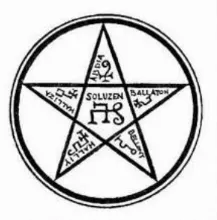

Symbol Grimoire
 Pentagram of Solomon
Pentagram of Solomon
Tradition / Origin
Type
Culture
Entities1
Other Symbols2
Rituals1

The Pentagram of Solomon is a five-pointed star inscribed within a circle, elaborated with divine names and magickal words at each of the five points and in the centre. It is a more complex version of the standard pentagram, specific to Solomonic ceremonial tradition.
The names are written beginning at the top point and proceeding clockwise, finishing with the centre. As each name is inscribed, it is chanted aloud as a conjuration against hostility, deceit, and illusion.
Once drawn in ink of art, the star and all its symbols are retraced with the athame, visualizing them burning in blue witch fire in the air above the paper.